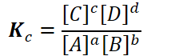{width="2.3854166666666665in" height="0.7291666666666666in"}
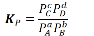{width="2.0208333333333335in" height="0.78125in"}
Products are in the numerator => directly proportional to K
Products in the denominator => inversely proportional to K
Therefore,
If products are favored, K will be larger
If reactants are favored, K will be smaller
The magnitude (amount) of K can tell us how the concentrations of products and reactants will compare at equilibrium
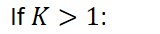{width="1.6666666666666667in" height="0.3541666666666667in"}
There are more products than reactants at equilibrium
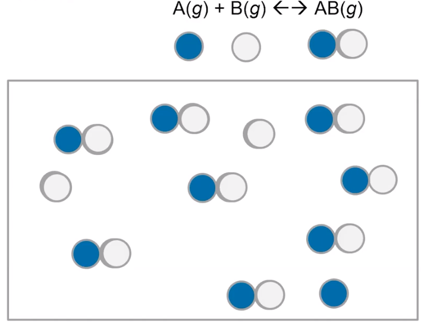{width="3.8958333333333335in" height="3.0208333333333335in"}
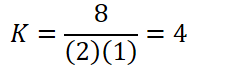{width="2.5in" height="0.6875in"}
Products are favored: count 8 particles of products, 3 particles of reactants
<!-- -->
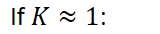{width="1.6666666666666667in" height="0.3541666666666667in"}
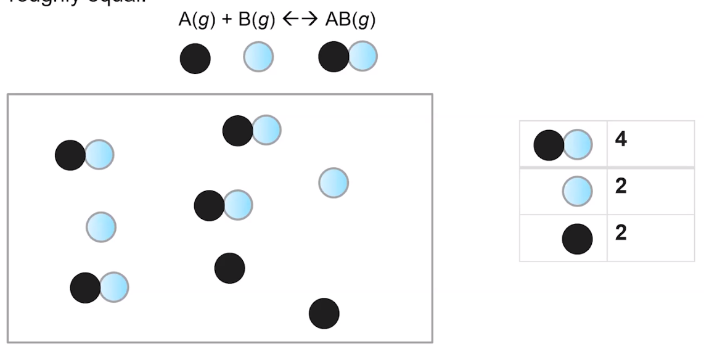{width="5.59375in" height="2.8333333333333335in"}
Count 4 AB, 2A and 2B:
4 particles of products, 4 particles of reactants => neither is favored
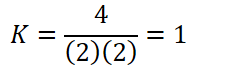{width="2.5in" height="0.6875in"}
<!-- -->
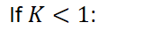{width="1.6666666666666667in" height="0.3541666666666667in"}
More reactants than products at equilibrium
Reactants are favored, concentration of reactants higher than concentration of products @ equilibrium
Denominator (reactants) larger than denominator (products)
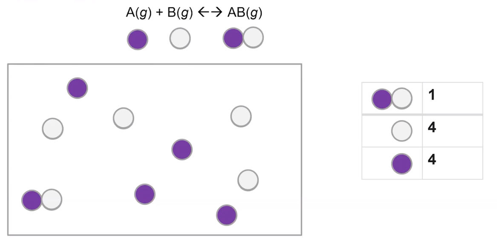{width="5.145833333333333in" height="2.5208333333333335in"}
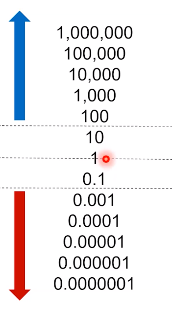{width="2.4375in" height="4.40625in"}
{width="8.385416666666666in" height="0.3541666666666667in"}
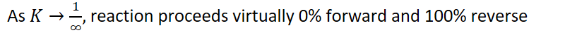{width="8.333333333333334in" height="0.4895833333333333in"}
{width="8.1875in" height="0.3541666666666667in"}
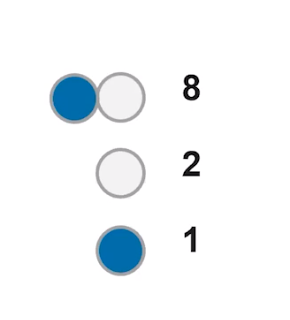{width="2.0104166666666665in" height="2.21875in"}